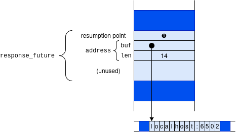
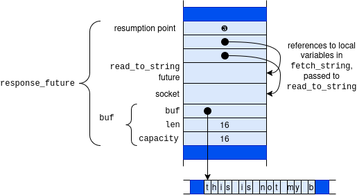

Chapter 21. Futures
In Chapter 20, we covered how to use Rust’s asynchronous programming system with async/await syntax and the Tokio runtime. Enabling asynchronous programming without either violating Rust’s rules of ownership and memory safety or compromising on performance isn’t trivial.
In this chapter, we’ll cover three foundational elements of asynchronous programming in Rust:
- the
Futuretrait, which defines an interface between things that need to be waited for and things that wait, - the waker mechanism, which allows futures to react to changes and I/O events without constantly polling,
- and runtimes and reactors, which tie futures, wakers, and operating system interfaces together into a functioning system.
async fns make it easy to create futures, but implementing futures by hand makes their exact size and layout visible in your code, makes it easier to understand exactly what they do, and, of course, is necessary for new operations and types of I/O that don’t already have an asynchronous implementation available. Understanding how futures are constructed and used allows you to write your own, as well as to read and debug those you encounter in the libraries your code depends on. In this chapter, we’ll implement a few futures of our own, as well as the code to drive them.
The Future Trait
The standard library’s Future trait is defined like this:
traitFuture{typeOutput;// For now, read `Pin<&mut Self>` as `&mut Self`.fnpoll(self:Pin<&mutSelf>,cx:&mutContext<'_>)->Poll<Self::Output>;}enumPoll<T>{Ready(T),Pending,}
The first time Future::poll is called, it kicks off the execution of the future. On each call, it tries to make progress without blocking. If poll finds that the future’s work is complete, it returns Poll::Ready(output), where output is the future’s final result. Otherwise, it returns Poll::Pending and promises to let the caller know when the the future is worth polling again by invoking a waker, a callback function supplied in the Context. We call this the “piñata model” of asynchronous programming: the only thing you can do with a future is whack it with a poll until a value falls out.
Implementing and Instantiating Futures
All modern operating systems include variants of their system calls that we can use to implement this sort of polling interface. On Unix and Windows, for example, if you put a network socket in nonblocking mode, reads and writes return an error if they would block; you have to try again later. This nonblocking mode is the operating system’s version of the Future trait. It provides a way for the operating system to say, “please go away and come back later when I have bytes for you,” rather than blocking the calling thread.
The standard library’s read_to_end method, which is synchronous, has the following signature:
fnread_to_end(&mutself,buf:&mutVec<u8>)->Result<usize>;
On the other hand, an asynchronous version of read_to_end would have a signature roughly like this:
fnread_to_end(&mutself,buf:&mutVec<u8>,)->implFuture<Output=Result<usize>>;
The future returned by an asynchronous method must hold all the information necessary to carry out the request made by the call. For example, the future returned by this read_to_end function must remember the input stream it was called on, and the Vec<u8> to which it should append the incoming data. Here’s what that might look like for an asynchronous read from a network socket:
usestd::net::TcpStream;pubstructReadToEndFuture<'a>{stream:&'amutTcpStream,buf:&'amutVec<u8>,bytes:usize,}
Of course, Tokio implements its own futures for reading from network sockets, which are more complex, but this ReadToEndFuture contains all the information needed to make progress on the read operation. Constructing it isn’t difficult, either; all we need is a non-blocking TcpStream and a buffer to write into. An asynchronous wrapper around TcpStream using this future might look like this:
usestd::net::ToSocketAddrs;/// Open handle to a read-only TCP stream.structAsyncStreamReader{stream:TcpStream,}implAsyncStreamReader{/// Connects to the given address to receive only.asyncfnconnect<A:ToSocketAddrs+Send+'static>(addr:A)->io::Result<Self>{// We need a blocking task here because making a network// connection *blocks* until the connection is made.tokio::task::spawn_blocking(move||{letstream=TcpStream::connect(addr)?;// Tell the operating system to return an error if there are no// bytes available when we try to read.stream.set_nonblocking(true)?;Ok(Self{stream})}).await.unwrap()}/// Asynchronously reads all data from the stream into `buf`.fnread_to_end<'a>(&'amutself,buf:&'amutVec<u8>)->ReadToEndFuture<'a>{ReadToEndFuture{stream:&mutself.stream,buf,bytes:0,}}}
Here, AsyncStreamReader::read_to_end adds lifetimes to indicate that the returned future can live only as long as the values that stream and buf are borrowing. But if read_to_end itself just returns a new ReadToEndFuture, how does anything actually get done?
How Do We Know When to Poll?
When a future is passed to an executor, or running async code .awaits one, it immediately calls Future::poll(). This first call will generally do some setup, then check if the underlying operation is ready. If so, poll() returns Poll::Ready, and the program moves on. If not, the future returns Poll::Pending and has to coordinate with the executor to poll it again at the right time. Think about what happens when we run code like this:
runtime.block_on(async{...letmutbuf=Vec::new();letresponse=reader.read_to_end(&mutbuf).await?;...})
The first time block_on polls the async block’s future, the network connection is almost certainly not ready immediately, so block_on goes to sleep. But when should it wake up? Somehow, once the network connection is ready, something needs to tell block_on that it should try polling the async block’s future again.
When an executor like block_on polls a future, it must pass in a callback called a waker. If the future is not ready yet, the rules of the Future trait say that it must return Poll::Pending for now, and arrange for the waker to be invoked later, if and when the future is worth polling again.
So a handwritten implementation of Future often looks something like this:
usestd::task::Waker;structMyPrimitiveFuture{...waker:Option<Waker>,}implFutureforMyPrimitiveFuture{typeOutput=...;fnpoll(mutself:Pin<&mutSelf>,cx:&mutContext<'_>)->Poll<...>{...if...futureisready...{returnPoll::Ready(final_value);}// Save the waker for later.self.waker=Some(cx.waker().clone());Poll::Pending}}
In other words, if the future’s value is ready, return it. Otherwise, stash a clone of the Context’s waker somewhere, and return Poll::Pending.
When the future is worth polling again, the future must notify the last executor that polled it by calling its waker’s wake method:
// If we have a waker, invoke it, and clear `self.waker`.ifletSome(waker)=self.waker.take(){waker.wake();}
Ideally, the executor and the future take turns polling and waking: the executor polls the future and goes to sleep, then the future invokes the waker, so the executor wakes up and polls the future again.
Futures of async functions and blocks don’t deal with wakers themselves. They simply pass along the context they’re given to the subfutures they await, delegating to them the obligation to save and invoke wakers. In the read_to_end example, the first poll of the async block’s future just passes the context along when it awaits ReadToEndFuture. Subsequent polls similarly pass their context through to whatever future the block awaits next. (We’ll see exactly what ReadToEndFuture does with the waker in “Reactors”.)
Waker implements Clone and Send, so a future can always make its own copy of the waker and send it to other threads as needed. The Waker::wake method consumes the waker. There is also a wake_by_ref method that does not, but some executors can implement the consuming version a bit more efficiently. (The difference is at most a clone.)
Although it’s inefficient for an executor to overpoll a future, it’s harmless. Futures, however, should be careful to invoke a waker only when polling would make actual progress: a cycle of spurious wakeups and polls can prevent an executor from ever sleeping at all, wasting power and leaving the processor less responsive to other tasks.
Now that we have shown how executors and primitive futures communicate, we’ll implement a future ourselves and then walk through an implementation of the block_on executor.
Invoking Wakers: spawn_blocking
In Chapter 20, we described the spawn_blocking function, which starts a given closure running on another thread and returns a future of its return value. We now have all the pieces we need to implement spawn_blocking ourselves. For simplicity, our version creates a fresh thread for each closure, rather than using a thread pool, as tokio’s version does.
Although spawn_blocking returns a future, we’re not going to write it as an async fn. Rather, it’ll be an ordinary, synchronous function that returns a struct, SpawnBlocking, on which we’ll implement Future ourselves.
The signature of our spawn_blocking is as follows:
pubfnspawn_blocking<T,F>(closure:F)->SpawnBlocking<T>whereF:FnOnce()->T,F:Send+'static,T:Send+'static,
Since we need to send the closure to another thread and bring the return value back, both the closure F and its return value T must implement Send. And since we don’t have any idea how long the thread will run, they must both be 'static as well. These are the same bounds that std::thread::spawn itself imposes.
SpawnBlocking<T> is a future of the closure’s return value. Here is its definition:
usestd::sync::{Arc,Mutex};usestd::task::Waker;pubstructSpawnBlocking<T>(Arc<Mutex<TaskState<T>>>);structTaskState<T>{value:Option<T>,waker:Option<Waker>,}
The TaskState struct must serve as a rendezvous between the future and the thread running the closure, so it is owned by an Arc and protected with a Mutex. (A synchronous mutex is fine here.) Polling the future checks whether value is present and saves the waker in waker if not. The thread that runs the closure saves its return value in value and then invokes waker, if present.
Here’s the full definition of spawn_blocking:
pubfnspawn_blocking<T,F>(closure:F)->SpawnBlocking<T>whereF:FnOnce()->T,F:Send+'static,T:Send+'static,{letstate=Arc::new(Mutex::new(TaskState{value:None,waker:None,}));std::thread::spawn({letstate=state.clone();move||{letvalue=closure();letmaybe_waker={letmutguard=state.lock().unwrap();guard.value=Some(value);guard.waker.take()};ifletSome(waker)=maybe_waker{waker.wake();}}});SpawnBlocking(state)}
After creating the TaskState value, this spawns a thread to run the closure, store the result in the TaskState’s value field, and invoke the waker, if any.
We can implement Future for SpawnBlocking as follows:
usestd::pin::Pin;usestd::task::{Context,Poll};impl<T:Send>FutureforSpawnBlocking<T>{typeOutput=T;fnpoll(self:Pin<&mutSelf>,cx:&mutContext<'_>)->Poll<T>{letmutguard=self.0.lock().unwrap();ifletSome(value)=guard.value.take(){returnPoll::Ready(value);}guard.waker=Some(cx.waker().clone());Poll::Pending}}
Polling a SpawnBlocking checks if the closure’s value is ready, taking ownership and returning it if so. Otherwise, the future is still pending, so it saves a clone of the context’s waker in the future’s waker field.
Once a Future has returned Poll::Ready, you’re not supposed to poll it again. The usual ways of consuming futures, like await and block_on, all respect this rule. If a SpawnBlocking future is overpolled, nothing especially terrible happens, but it doesn’t go to any effort to handle that case, either. This is typical for handwritten futures.
Implementing block_on
In addition to being able to implement primitive futures, we also have all the pieces we need to build a simple executor. In this section, we’ll write our own version of block_on. It will be quite a bit simpler than Tokio’s version; for example, it won’t support task-local variables or nested invocations (calling block_on from asynchronous code). But it is sufficient to run our read_to_end future.
Here’s the code:
usestd::pin::pin;usestd::task::{Context,Poll};usestd::thread;usewaker_fn::waker_fn;// Cargo.toml: waker-fn = "1.2.0"fnblock_on<F:Future>(future:F)->F::Output{letexecutor_thread=thread::current();letwaker=waker_fn(move||executor_thread.unpark());letmutcontext=Context::from_waker(&waker);letmutfuture=pin!(future);loop{matchfuture.as_mut().poll(&mutcontext){Poll::Ready(value)=>returnvalue,Poll::Pending=>thread::park(),}}}
This is pretty short, but there’s a lot going on, so let’s take it one piece at a time.
letexecutor_thread=thread::current();
The standard library equips every thread with a simple blocking mechanism. Calling std::thread::park() blocks the thread until someone else calls .unpark() on the corresponding Thread, which you obtain beforehand, either from a JoinHandle for a thread you’ve spawned or from std::thread::current() for the current thread. If you unpark a thread that isn’t parked yet, its next call to park returns immediately, without blocking. Our block_on will use the std::thread::park to wait whenever the future isn’t ready, and the waker we pass to futures will unpark it.
letwaker=waker_fn(move||executor_thread.unpark());
The waker_fn function, from the crate of the same name, creates a Waker from a given closure. Here, we make a Waker that, when invoked, calls the closure move || thread.unpark(). You can also create wakers by implementing the std::task::Wake trait, but waker_fn is more convenient here.
letmutfuture=pin!(future);
This gives us the Pin<&mut Self> required by the poll method. (We’ll discuss this in depth in “Pinning”.)
loop{matchfuture.as_mut().poll(&mutcontext){Poll::Ready(value)=>returnvalue,Poll::Pending=>thread::park(),}}
Finally, the polling loop is quite simple. Passing a context carrying our waker, we poll the future until it returns Poll::Ready. If it returns Poll::Pending, we park the thread, which blocks until waker is invoked. Then we try again.
The as_mut call lets us poll future without giving up ownership; we’ll explain this more in “Pinned Pointers”.
The Role of Runtimes
It’s entirely possible to write an efficient program using async without relying on any external libraries, or to use a patchwork of libraries that each provide just one component, but most asynchronous programs in Rust use an integrated runtime library. Runtimes provide an executor alongside I/O and synchronization facilities that are designed to work well with it. In this book, we’ve used the Tokio library, which provides a broad set of I/O operations, channels, and locks alongside a work-stealing executor designed to make efficient use of multiple threads. Other runtimes exist for specific use cases, like software running on embedded systems with limited concurrency facilities.
In order to understand exactly what Tokio provides, let’s first implement an I/O future ourselves.
Implementing I/O Futures
As we saw in “Asynchronous Versions of Blocking Tools”, it’s entirely possible to make I/O operations asynchronous by simply spawning a thread to deal with each one, but in many cases, we can do better.
Remember the ReadToEndFuture we briefly discussed in “Implementing and Instantiating Futures”? Implementing Future for it is mostly straightforward:
usestd::io::{self,ErrorKind,prelude::*};usestd::pin::Pin;usestd::task::{Context,Poll};impl<'a>FutureforReadToEndFuture<'a>{typeOutput=io::Result<usize>;fnpoll(mutself:Pin<&mutSelf>,cx:&mutContext<'_>)->Poll<Self::Output>{letmutbuf=[0;4096];loop{matchself.stream.read(&mutbuf){Ok(0)=>returnPoll::Ready(Ok(self.bytes)),Ok(n)=>{self.buf.extend_from_slice(&buf[0..n]);self.bytes+=n;// Repeat the loop and try to make more progress.}Err(e)ife.kind()==ErrorKind::WouldBlock=>{todo!("Uh oh! How do we know when to poll() again?");returnPoll::Pending;}Err(e)=>returnPoll::Ready(Err(e)),}}}}
Each time poll() is called, it tries to read() some bytes into an intermediate buffer in a loop, which keeps running as long as read() is making progress. If read() returns Ok(0), the TCP connection is closed and the future can return Poll::Ready with the total number of bytes read. If read() returns an Error with any ErrorKind other than WouldBlock, we want to stop and return that error immediately, so that results in a Poll::Ready too.
When read() returns an Error with ErrorKind::WouldBlock, the operating system is telling our program that there’s no data available to read right now, but there might be some data in the future. We can’t wake() the waker immediately, because it’s very likely that calling poll() again will have exactly the same result: nothing. This would lead to the executor simply poll()ing the same future over and over again, wasting time.
On the other hand, we can’t just return Pending and never call wake_by_ref(), because our future would never be woken up again. Unlike spawn_blocking, there’s no convenient thread to send our Waker to. We don’t want to spawn a new thread for every stream being read, since that would be no more efficient than simply using std::thread::spawn() without a future. So, how does our code know when to call its waker?
Reactors
One of the key features of Rust’s asynchronous programming ecosystem isn’t actually part of the language or its standard library at all. A reactor is a single thread that interacts with the operating system on behalf of other parts of an asynchronous program. It allows futures to register their interest in certain events, such as time passing, signals or errors being raised by the operating system, or I/O events, and runs callbacks when those events occur. That’s exactly what ReadToEndFuture needs in order to work properly in an asynchronous program.
Reactors aren’t unique to Rust. NodeJS, for example, is based on an event loop which drives the I/O operations represented in JavaScript programs as Promises. The operating system machinery to support this paradigm has existed since the 1980s, and most high-performance servers use it. Asynchronous Rust is just an ergonomic way to program in this style.
Over the next few pages, we will describe how reactors work, then show a Unix implementation of a reactor that can handle network reads. Before we begin, we need a little vocabulary about how I/O works on Unix. A file descriptor is an integer that acts as a handle to some system resource, usually something you can read or write: a file, pipe, network socket, or terminal. The poll API takes an array of file descriptors as an argument, waits until one or more are ready for reading or writing, and then tells us which ones need attention.
Throughout this example, we will use Rust’s Unix-only file descriptor types: std::os::fd::RawFd, BorrowedFd, and OwnedFd. All three are just newtypes wrapping integers returned by the operating system in response to system calls like open, dup, and so forth. Types like File, TcpStream, and PipeReader are also just wrappers around these integers of special origin, with helpful methods attached. The AsFd and AsRawFd traits provide access to the underlying file descriptors.

Figure 21-1. A reactor participates in an asynchronous read
Figure 21-1 shows a poll-based reactor in action.
-
First, the asynchronous task enters
ReadToEndFuture::polland tries toread()data from the network (❶). This is the part we already implemented in the last section. If this read succeeded right away, the reactor wouldn’t need to get involved. In the story this figure is telling, however, the operating system returns an error, saying that there’s no data ready and the read would therefore block. (Remember, earlier we calledset_nonblockingon the socket specifically to request this error, so that we don’t block in asynchronous code.) -
The task handles this error by passing the network connection’s file descriptor (
fd) and its waker to the reactor (❷). The gist of this message is, “wake me up when this connection has data to read”. The task then generally won’t have anything to do until it’s awakened, so it returnsPendingto the executor. The executor can go do other work. -
The reactor adds
fdto the list of connections it’s monitoring. As we mentioned, it might be responsible for monitoring connections for thousands of tasks, not just the one shown here. The reactor uses thepoll()system call to wait for I/O on any of those connections (❸). This blocks the reactor thread. -
Eventually, a network packet arrives on the connection. The operating system returns from
pollto the reactor thread (❹), telling the reactor thatfdis now ready to read. -
The reactor then calls
waker.wake()to wake up the task (❺). Its work for this task is now done, so it can drop the waker and its handle to the file descriptor. -
The executor now polls the task again, and this time the
readsucceeds (❻).
This is the arrangement that enables a small number of threads to service a large number of connections.
Implementating a Reactor
Our simple reactor is about 100 lines of code, so we’ll show it in pieces.
First, we need a way for our asynchronous tasks to send requests to the reactor (step ❷ in the figure). We’ll use a channel. Since there’s just one reactor thread, we’ll create a single, global handle to it, which looks like this:
usestd::io::PipeWriter;usestd::os::fd::OwnedFd;usestd::sync::{Arc,Mutex,mpsc};usestd::task::Waker;#[derive(Clone)]pubstructReactorHandle{fd_sender:mpsc::Sender<(OwnedFd,Waker)>,interrupt_writer:Arc<Mutex<PipeWriter>>,}
This ReactorHandle is just a way for asynchronous tasks to send (fd, waker) pairs to the reactor. We’ll see in a moment how it works and what the interrupt_writer is for.
Creating the ReactorHandle is simple:
usestd::sync::OnceLock;staticREACTOR:OnceLock<ReactorHandle>=OnceLock::new();pubfnget_reactor()->ReactorHandle{REACTOR.get_or_init(||{let(reader,writer)=std::io::pipe().expect("Could not open pipe");let(sender,receiver)=mpsc::channel::<(OwnedFd,Waker)>();std::thread::spawn(move||reactor_loop(reader,receiver));ReactorHandle{fd_sender:sender,interrupt_writer:Arc::new(Mutex::new(writer)),}}).clone()}
When get_reactor is called, it tries to return a clone of the ReactorHandle stored in the global REACTOR variable. If there isn’t one yet, the reactor hasn’t been started, so it creates all of the requisite parts and starts reactor_loop in a new thread—see below for what exactly that does.
We use std::io::pipe() to create a Unix pipe, a pair of file descriptors that transport bytes between them. We’ll use this to notify the reactor thread when there’s something new in the channel. Since the reactor’s whole purpose is to wait for new data from file descriptors, a pipe is a form of notification it’ll find easy to handle.
The ReactorHandle doesn’t provide a way to remove handles from the reactor explicitly, and we don’t need one. Once they have bytes available, their associated task will be woken up, and they’ll be removed.
Having created both ends of the channel and pipe, get_reactor passes them into reactor_loop, which is spawned on a new thread. That’s where the core of the reactor lives:
usestd::collections::HashMap;usestd::io::PipeReader;usestd::os::fd::{AsFd,AsRawFd,RawFd};usenix::poll::{PollFd,PollFlags,PollTimeout,poll};fnreactor_loop(mutinterrupt_reader:PipeReader,handle_receiver:mpsc::Receiver<(OwnedFd,Waker)>,){letmutfds=HashMap::<RawFd,(OwnedFd,Waker)>::new();loop{letinterrupt_poller=PollFd::new(interrupt_reader.as_fd(),PollFlags::POLLIN);letmutpollers=vec![interrupt_poller];for(fd,_)infds.values(){pollers.push(PollFd::new(fd.as_fd(),PollFlags::POLLIN));}// Wait for one of the configured pollers to have data availablepoll(&mutpollers,PollTimeout::NONE).expect("Unable to poll()");// Find out which file descriptors have data to readletawoken_fds:Vec<_>=pollers.iter().filter_map(|p|matchp.revents(){Some(e)if!e.is_empty()=>Some(p.as_fd().as_raw_fd()),_=>None,}).collect();// Handle waking up the tasks for each fdawoken_fds.iter().for_each(|fd|{ifletSome((_,waker))=fds.remove(fd){waker.wake();}elseif*fd==interrupt_reader.as_raw_fd(){letmutbuf=[0_u8;1024];interrupt_reader.read(&mutbuf).expect("Interrupt pipe closed");}});// Insert newly queued files, if any, into the hashmapfor(fd,waker)inhandle_receiver.try_iter(){fds.insert(fd.as_raw_fd(),(fd,waker));}}}
The reactor maintains its internal state as a map of RawFds, the underlying representation of a file descriptor, to their associated Wakers. Within a process, currently open file descriptors are guaranteed to be unique, so there’s no danger of a collision.
The rest of the reactor is one big loop. First, the reactor constructs the PollFd structs that indicate interest in particular events to the operating system. Each PollFd contains the file descriptor and PollFlags::POLLIN, which tells the operating system we only care about input. The first of these PollFd structs registers interest in the interrupt pipe, so writing to it will wake the reactor up and start another iteration of the loop.
Those PollFds are then passed to poll. We’re using nix::poll::poll, a thin safe wrapper around the poll system call. It blocks the reactor thread until one or more of the file descriptors has had something written to it. This call to poll is step ❸ of the figure; returning from it is step ❹.
Before it returns, the operating system updates the PollFd structs with some flags, accessible in nix through the revents method. The reactor checks all the PollFds, selecting only those poll marked as readable. It removes their entries from the file descriptor map, taking ownership of each associated Waker and calling wake() on it (step ❺). The executor will take care of step ❻, calling Future::poll() on the awakened tasks.
The reactor then reads from the interrupt pipe to to clear it out. We aren’t interested in the values written to it, just the fact that something was written. Finally, the reactor checks for any newly submitted files to be watched and adds them to the map. Then it’s time to do the whole dance again.
The last piece of the puzzle is actually getting the (OwnedFd, Waker) pairs sent to the reactor when they’re ready to be waited on, which happens in two parts. First, there’s a method on the ReactorHandle that accepts a TcpStream and a Waker:
implReactorHandle{pubfnrequest_wakeup(&self,stream:&TcpStream,waker:Waker){letfd=stream.as_fd().try_clone_to_owned().unwrap();letmutinterrupt_writer=self.interrupt_writer.lock().unwrap();self.fd_sender.send((fd,waker)).expect("Failed to send new subscription to reactor");interrupt_writer.write_all(b"\0").expect("Failed to interrupt reactor");}}
First, request_wakeup has to get an OwnedFd from the borrowed TcpStream. The standard library allows us to get a BorrowedFd from a reference to a TcpStream, and a BorrowedFd can be turned into an OwnedFd by asking the operating system to make a new file descriptor, with a new number and its own open/closed state, which points to the same I/O object internally. This OwnedFd will be dropped and closed if the reactor wakes up the future that created it, but that won’t affect the file descriptor held by that future.
With the OwnedFd in hand, request_wakeup adds the future’s Waker to the reactor’s queue along with its corresponding file descriptor, then writes a single byte to the interrupt pipe. This makes the reactor wake up, check if any of the already-registered streams are readable, and check the channel for new Wakers to add to its HashMap.
So, we can finally properly implement that last match arm in ReadToEndFuture::poll:
Err(e)ife.kind()==ErrorKind::WouldBlock=>{get_reactor().request_wakeup(self.stream,cx.waker().clone());returnPoll::Pending;}
If the future sees that it can’t make more progress at the moment, it simply asks the reactor for a wake-up call and returns Poll::Pending.
Writing reactors that handle I/O efficiently can be complex. For example, using unsafe code, it’s possible to avoid the call to try_clone_to_owned in request_wakeup. With some additional setup, the number of allocations within each iteration of the reactor’s loop can also be reduced, and we’ll see how to remove the intermediate buffer allocation in poll later in this chapter.
Tokio provides a broad set of I/O futures which use a single, well-optimized event loop. They also have the advantage of being designed with the inner workings of Tokio’s runtime in mind.
Cooperative Multitasking
In addition to responding to I/O events, Tokio keeps track of how active each task has been and balances time between them, ensuring that newly ready tasks don’t sit around waiting on tasks that have been consistently making progress. This mechanism is similar to the preemptive multitasking employed by an operating system’s scheduler, but Tokio can’t just pause a future whenever it likes. In its cooperative multitasking scheme, Tokio has to rely on every future that does long-running work to occasionally yield control.
If you do long computations in a future or bring in a non-Tokio library to do I/O, this can become a problem. Consider this asynchronous message-counting middleware:
// Count the messages passed from one FTL communicator to another.asyncfncount(inbox:&mutAnsible,outbox:&mutAnsible)->usize{letmutn=0;whileletSome(msg)=inbox.read_message().await{outbox.send_message(msg).await;n+=1;}n}
If the futures returned by read_message and send_message usually—or, worse, always—return Poll::Ready, running this future under Tokio will cause other work on that thread to grind to a halt, because Tokio won’t have an opportunity to schedule anything else to run.. Even though execution is passing through .await points, it never yields control back to the executor. Fortunately, Tokio provides a way to opt in to the cooperative multitasking system in consume_budget:
whileletSome(msg)=inbox.read_message().await{outbox.send_message(msg).await;n+=1;tokio::task::consume_budget().await;}
Polling the future returned by consume_budget updates the runtime’s understanding of how much work the awaiting task has done. The caller then receives Poll::Ready if the runtime is ready for the task to do some more work immediately, or Poll::Pending if Tokio wants to run something else and wake this task up again later.
As a user of Tokio, you won’t usually need to call consume_budget yourself, because many of the futures returned by Tokio’s APIs, and the libraries that use them (like reqwest), participate in this system. Every time you await an I/O future under Tokio, your code is implicitly participating in cooperative multitasking already.
Tokio’s Executor
You may remember from “Tasks and Send” that tasks spawned in Tokio must be Send, because Tokio’s executor is multi-threaded. Like Rayon, Tokio uses work-stealing to balance work across multiple threads. Tasks that are ready to run are placed in a queue and polled on whichever thread is available until they return either Poll::Ready or Poll::Pending. Periodically, and whenever there aren’t any tasks in the queue, Tokio checks for new I/O events that might wake up some tasks.
Tokio also provides a single-threaded option in the current-thread executor, which is what you get if you call block_on. It works similarly to the work-stealing executor, but with just one thread, queueing work to be done and checking for new I/O events periodically. block_on can run a non-Send future, but still requires futures spawned from within that future to be Send.
Pinning
Most things in Rust don’t care where they’re stored. You’re free to pass an i32 or a String by value, return it, put it in a Box, and so forth, without worrying that accessing that value will cause undefined behavior. Not every value is like this, though. Address-sensitive values, whose validity depends on being at a particular address in memory, can’t be moved. Some futures are address-sensitive.
In this section, we’ll show why futures of asynchronous function calls and blocks are address-sensitive, and why that means they can’t be handled as freely as ordinary Rust values. Then we’ll show how the Pin type serves as a “seal of approval” on pointers that can be counted on to manage such futures safely, and how the Unpin trait allows the compiler to tell which types need special handling. Finally, we’ll show a few ways to work with Pin values.
The Two Life Stages of a Future
Consider this simple asynchronous function:
usestd::io;usetokio::io::AsyncReadExt;usetokio::net::TcpStream;asyncfnfetch_string(address:&str)->io::Result<String>{❶letmutsocket=TcpStream::connect(address).await❷?;letmutbuf=String::new();socket.read_to_string(&mutbuf).await❸?;Ok(buf)}
This opens a TCP connection to the given address and returns, as a String, whatever the server there wants to send. The points labeled ❶, ❷, and ❸ are the resumption points, the points in the async fn’s code at which execution may be suspended.
Suppose you call it, without awaiting, like so:
letresponse_future=fetch_string("localhost:6502");
Now response_future is a future ready to begin execution at the start of fetch_string, with the given argument. In memory, the future looks something like Figure 21-2.

Figure 21-2. The future constructed for a call to fetch_string
Since we just created this future, it says that execution should begin at resumption point ❶, at the top of the function body. In this state, the only values a future needs to proceed are the function arguments.
Now suppose that you poll response_future a few times and it reaches this point in the async code:
socket.read_to_string(&mutbuf).await❸?;
Suppose further that the result of read_to_string isn’t ready, so the poll returns Poll::Pending. At this point, the future looks like Figure 21-3.
A future must always hold all the information needed to resume execution the next time it is polled. In this case that is:
-
Resumption point ❸, saying that execution should resume in the
awaitpollingread_to_string’s future. -
The variables that are alive at that resumption point:
socketandbuf. The value ofaddressis no longer present in the future, since the function no longer needs it. -
The
read_to_stringsubfuture, which theawaitexpression is in the midst of polling.

Figure 21-3. The same future, in the midst of awaiting read_to_string
Note that the call to read_to_string has borrowed references to socket and buf. In a synchronous function, all local variables live on the stack, but in an async function, local variables that are alive across an await must be located in the future, so they’ll be available when it is polled again. Borrowing a reference to such a variable borrows a part of the future.
However, Rust requires that values not be moved while they are borrowed. Suppose you were to move this future to a new location:
letnew_variable=response_future;
Rust has no means to find all the active references and adjust them accordingly. Instead of pointing to socket and buf at their new locations, the references continue to point at their old locations in the now-uninitialized response_future. They have become dangling pointers, as shown in Figure 21-4.
Preventing borrowed values from being moved is generally the borrow checker’s responsibility. The borrow checker treats variables as the roots of ownership trees, but unlike variables stored on the stack, variables stored in futures get moved if the future itself moves. This means the borrows of socket and buf affect not just what fetch_string can do with its own variables, but what its caller can safely do with response_future, the future that holds them. Futures of async functions are a blind spot for the borrow checker, which Rust must cover somehow if it wants to keep its memory safety promises.

Figure 21-4. fetch_string’s future, moved while borrowed (Rust prevents this)
Rust’s solution to this problem rests on the insight that futures are always safe to move when they are first created, and only become unsafe to move when they are polled. A future that has just been created by calling an async function simply holds a resumption point and the function’s arguments’ values, while one created by evaluating an async block holds a resumption point and the values it captures. These are only in scope within the async function or block, which has not yet begun execution. Only polling a future can borrow its contents.
From this, we can see that every future has two life stages:
-
The first stage begins when the future is created. Because the
asynccode hasn’t begun execution, no part of it could possibly be borrowed yet. At this point, it’s as safe to move as any other Rust value. -
The second stage begins the first time the future is polled. Once the
asynccode has begun execution, it could borrow references to variables stored in the future and then await, leaving that part of the future borrowed. Starting after its first poll, we must assume the future may not be safe to move.
The flexibility of the first life stage is what lets us pass futures to block_on and spawn and call adapter methods like race and fuse, all of which take futures by value. In fact, even the async function call that created the future in the first place had to return it to the caller; that was a move as well.
To enter its second life stage, the future must be polled. The poll method requires the future be passed as a Pin<&mut Self> value. Pin is a wrapper for pointer types (like &mut Self) that restricts how the pointers can be used, ensuring that their referents (like Self) cannot ever be moved again. So you must produce a Pin-wrapped pointer to the future before you can poll it.
This, then, is Rust’s strategy for keeping futures safe: a future can’t become dangerous to move until it’s polled; you can’t poll a future until you’ve constructed a Pin-wrapped pointer to it; and once you’ve done that, the future can’t be moved.
“A value you can’t move” sounds impossible: moves are everywhere in Rust. We’ll explain exactly how Pin protects futures in the next section..
Pinned Pointers
The Pin type is a wrapper for pointers that prevents the pointer’s referent from being moved. It was introduced at the same time as async, await, and Future, specifically to solve the problems caused by address-sensitive futures.
By pointer, we mean any type that implements Deref, and possibly DerefMut. A Pin wrapped around a pointer is called a pinned pointer. Pin<&mut T> and Pin<Box<T>> are typical.
The definition of Pin in the standard library is simple:
pubstructPin<P>{pointer:P,}
Note that the pointer field is not pub. This means that the only way to construct a Pin is to get the standard library to make it for you. There are a few features that do so, and each one is carefully designed to ensure that once a pinned pointer exists, you can’t move the value:
-
The
pin!macro takes a value of typeT, stores it in a hidden local variable, and returns a pinned pointer to that variable, aPin<&mut T>. Simply putting the value in a variable that you can’t name is sufficient to keep you from moving it again. It’ll be dropped when control reaches the end of the current block. We usedpin!in ourblock_onimplementation to pin the future we wanted to poll. -
The standard library’s
Box::pinconstructor takes ownership of a value of any typeT, moves it into the heap, and returns aPin<Box<T>>. -
Pin<Box<T>>implementsFrom<Box<T>>, soPin::from(boxed)takes ownership ofboxedand gives you back a pinned box pointing at the sameTin the heap.
Every way to obtain a pinned pointer entails giving up ownership of the value being pinned, and there is no way to get it back out. The pinned pointer itself can be moved in any way you please, of course, but moving a pointer doesn’t move its referent. So possession of a pinned pointer to a future serves as proof that you have permanently given up the ability to move that future. This is all we need to know that it can be polled safely.
Once you’ve pinned a future, if you’d like to poll it, all Pin<pointer to T> types have an as_mut method that dereferences the pointer and returns the Pin<&mut T> that poll requires.
The as_mut method can also help you poll a future without giving up ownership. Our block_on implementation used it in this role:
letmutfuture=pin!(future);loop{matchfuture.as_mut().poll(&mutcontext){Poll::Ready(value)=>returnvalue,Poll::Pending=>thread::park(),}}
Here, the pin! macro has redeclared future as a Pin<&mut F>, so we could just pass that to poll. But mutable references are not Copy, so Pin<&mut F> cannot be Copy either, meaning that calling future.poll() directly would take ownership of future, leaving the next iteration of the loop with an uninitialized variable. To avoid this, we call future.as_mut() to reborrow a fresh Pin<&mut F> for each loop iteration.
There is no way to get a &mut reference to a pinned future: if you could, you could use std::mem::replace or std::mem::swap to move it out and put a different future in its place.
The reason we don’t have to worry about pinning futures in ordinary asynchronous code is that the most common ways to obtain a future’s value—awaiting it or passing to an executor—all take ownership of the future and manage the pinning internally. For example, our block_on implementation takes ownership of the future and uses the pin! macro to produce the Pin<&mut F> needed to poll. An await expression also takes ownership of the future and uses an approach similar to the pin! macro internally.
The Unpin Trait
However, not all futures require this kind of careful handling. For any handwritten implementation of Future for an ordinary type, like our SpawnBlocking type mentioned earlier, the restrictions on constructing and using pinned pointers are unnecessary.
Such durable types implement the Unpin marker trait:
traitUnpin{}
Almost all types in Rust automatically implement Unpin, using special support in the compiler. async futures are the exceptions to this rule.
For Unpin types, Pin imposes no restrictions whatsoever. You can make a pinned pointer from an ordinary pointer with Pin::new and get the pointer back out with Pin::into_inner. The Pin itself passes along the pointer’s own Deref and DerefMut implementations.
For example, String implements Unpin, so we can write:
letmutstring="Pinned?".to_string();letmutpinned:Pin<&mutString>=Pin::new(&mutstring);pinned.push_str(" Not");Pin::into_inner(pinned).push_str(" so much.");letnew_home=string;assert_eq!(new_home,"Pinned? Not so much.");
Even after making a Pin<&mut String>, we have full mutable access to the string and can move it to a new variable once the Pin has been consumed by into_inner and the mutable reference is gone. So for types that are Unpin—which is almost all of them—Pin is mostly just a boring wrapper around pointers to that type.
This means that when you implement Future for your own Unpin types, your poll implementation can treat self as if it were &mut Self, not Pin<&mut Self>. Pinning becomes something you can mostly ignore, unless you need to make disjoint mutable borrows of the fields of the future - like, for example, a buffer and a file, as in ReadToEndFuture.
The ReadToEndFuture::poll method that we implemented above reads into an intermediate buffer and then copies its contents into the future’s output buffer. It would be more natural to skip the intermediate buffer and write straight into the output vector, and the crate rustix provides a wrapper type for Vec that allows us to do just that:
userustix::buffer::spare_capacity;// Cargo.toml: rustix = "1"...fnpoll(mutself:Pin<&mutSelf>,cx:&mutContext<'_>)->Poll<Self::Output>{loop{ifself.buf.capacity()==self.buf.len(){self.buf.reserve(4096);}matchrustix::io::read(&mutself.stream,spare_capacity(self.buf)){...
rustix::io::read can read bytes into a variety of places in memory. Using spare_capacity, we’re telling it to write into the unused capacity of self.buf. This requires two mutable borrows of self: one for self.stream and one for self.buf. The Rust compiler is smart enough to know that these fields are not the same—unless those fields are being accessed through DerefMut, which is how Pin works. And indeed, this code does not compile:
error: cannot borrow `self` as mutable more than once at a timematch rustix::io::read(&mut self.stream, spare_capacity(self.buf)) {---------------- ---- ^^^^| | second mutable| | borrow occurs here| || first mutable borrow occurs herefirst borrow later used by call
Fortunately, ReadToEndFuture is Unpin, so all we need to do is call Pin::into_inner:
userustix::io::read;// Cargo.toml: rustix = "1"userustix::buffer::spare_capacity;impl<'a>FutureforReadToEndFuture<'a>{typeOutput=io::Result<usize>;fnpoll(self:Pin<&mutSelf>,cx:&mutContext<'_>)->Poll<Self::Output>{letunpinned=Pin::into_inner(self);loop{ifunpinned.buf.capacity()==unpinned.buf.len(){unpinned.buf.reserve(4096);}matchread(&mutunpinned.stream,spare_capacity(unpinned.buf)){Ok(0)=>returnPoll::Ready(Ok(unpinned.bytes)),Ok(n)=>{unpinned.bytes+=n;}Err(e)ife.kind()==ErrorKind::WouldBlock=>{get_reactor().request_wakeup(unpinned.stream,cx.waker().clone());returnPoll::Pending;}Err(e)=>returnPoll::Ready(Err(e.into())),}}}}
Pinning shows up whenever you have a reference to a future. Most of the time, this is in Future::poll or when using select! in a loop, as we showed in “Racing futures with tokio::select!”..
Conclusion
If you look inside something like the HTTP library hyper, you will find futures carefully hand-coded to ensure cancel safety, memory efficiency, and low latency. The work that goes into designing and refining these smallest units of code is justified because of the massive leverage they offer. A decrease in the time it takes to poll a future in hyper translates directly to web applications, proxies, and caches across the ecosystem handling more requests per second, on the same hardware, for the same power consumption.